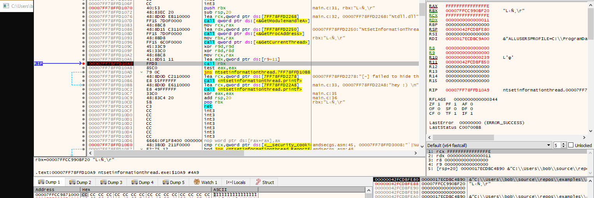
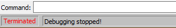
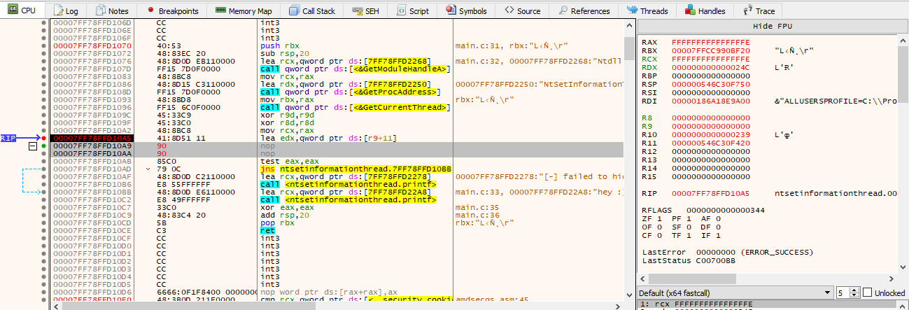
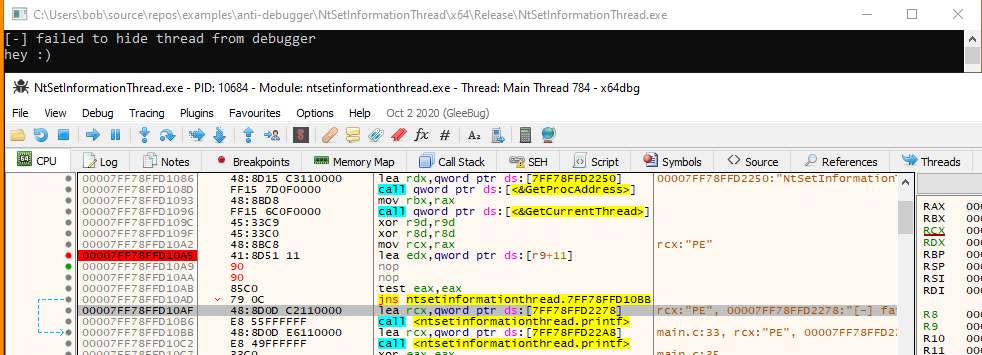

# NtSetInformationThread - Hide prog's main thread
•
https://ntquery.wordpress.com/2014/03/29/anti-debug-ntsetinformationthread/•
https://github.com/cetfor/AntiDBG/blob/89f8fb7fb572aae326c2b0538e9e2b2cf56cf102/antidbg/antidbg.c#L293•
https://guidedhacking.com/threads/how-to-find-hidden-threads-threadhidefromdebugger-antidebug-trick.14281/NtSetInformationThread sets the priority of a thread.
It takes a value from the
THREADINFOCLASS structure.
THREADINFOCLASS contains an undocumented member call
ThreadHideFromDebugger -
0x11https://www.geoffchappell.com/studies/windows/km/ntoskrnl/api/ps/psquery/class.htmYou can hide your program's main thread from the debugger.
After it's hidden, the debugger will close/crash.
ThreadHideFromDebugger exists because:
when you attach a debugger to a process, a new thread gets created.
If this thread isn't hidden from the debugger, the debugger will begin debugging its own debugging thread, and be caught in an endless loop.
Therfore, when the debugging thread is created, Windows calls
NtSetInformationThread and
ThreadHideFromDebugger is set.
Plugins to hide the debugger don't work against this method (so far. only tested x64dbg).
## Code
#include <stdio.h>
#include <Windows.h>
#include <winternl.h>
typedef NTSTATUS(__stdcall* t_NtSetInformationThread)(
HANDLE ThreadHandle,
THREADINFOCLASS ThreadInformationClass,
PVOID ThreadInformation,
ULONG ThreadInformationLength
);
/*
Hide the main thread from the debugger.
Any attempt to control the process afer this call will end the debugging session.
*/
void AntiDebugger_HideMainThread(void)
{
NTSTATUS nt_status = 0;
DWORD ThreadHideFromDebugger = 0x11;
t_NtSetInformationThread d_NtSetInformationThread = (t_NtSetInformationThread)GetProcAddress(GetModuleHandleA("Ntdll.dll"), "NtSetInformationThread");
nt_status = d_NtSetInformationThread(GetCurrentThread(), ThreadHideFromDebugger, 0, 0);
if (!NT_SUCCESS(nt_status))
printf("[-] failed to hide thread from debugger \n");
return;
}
int main(void)
{
AntiDebugger_HideMainThread();
printf("hey :) \n");
return 0;
}
## Demo
If we set a breakpoint just before
NtSetInformationThread is run,
we can see that the program is running fine.
Now we step forward 1 instruction,
NtSetInformationThread runs, and the debugging session closes.
Sometimes the program crashes, sometimes it says the thread exited.
But debugging stops.
## Bypass
•
nop the
NtSetInformationThread function that hides the thread
• replace int3 with a nop?
• Hook
NtSetInformationThreadWe've set a breakpoint on the call to
NtSetInformationThreadJust fill it with NOPs.
The call to
NtSetInformationThread won't happen and code execution will just continue.
However, if there was error checking on the
NtSetInformationThread code
i.e. if
NtSetInformationThread fails, exit the program, then you would need to handle the exit too.